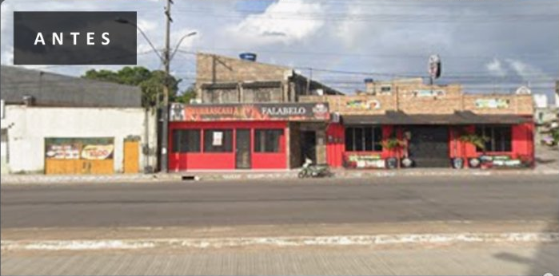
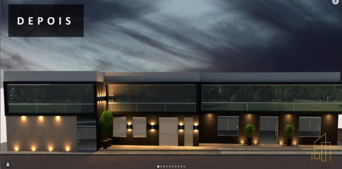
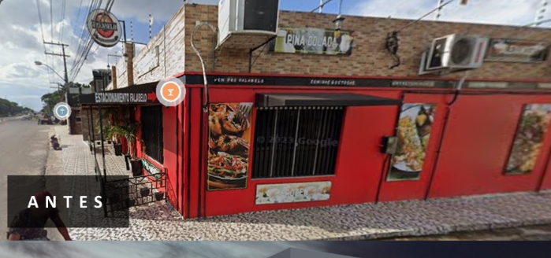
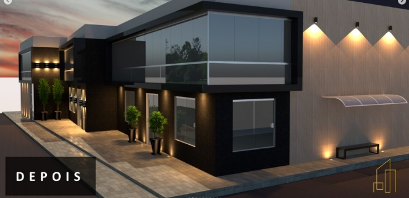
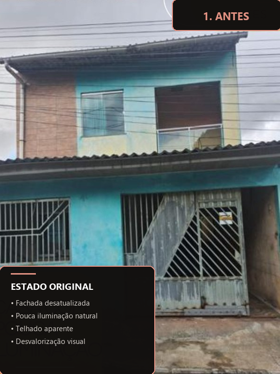
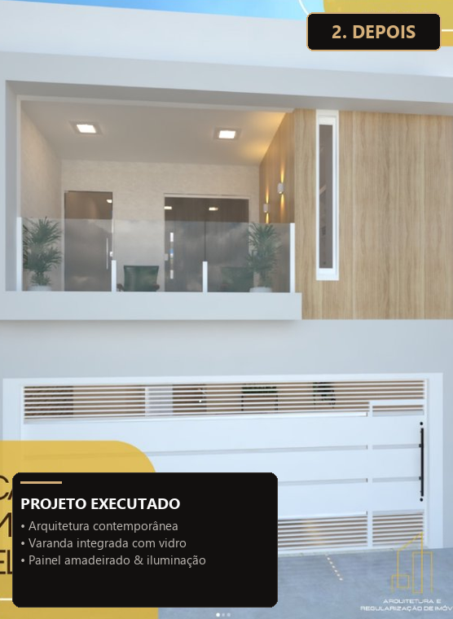
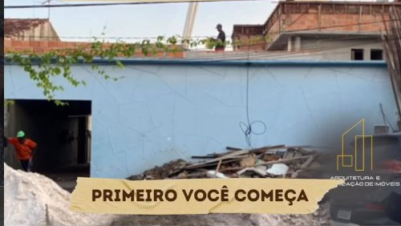
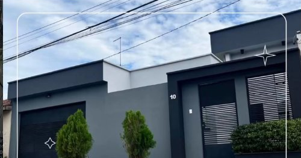
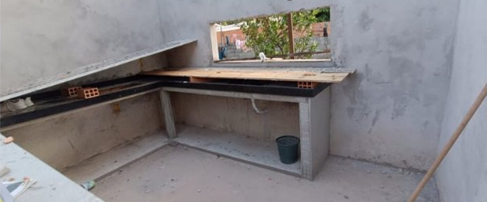
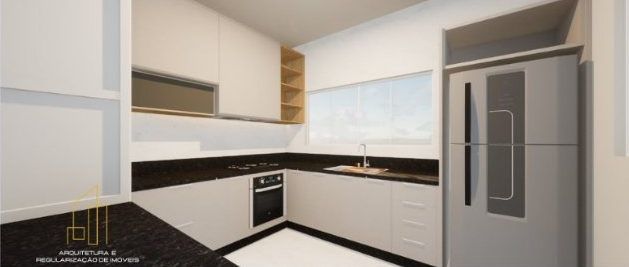

O Caso 04 (Rodovia Augusto Montenegro) é a prova definitiva de autoridade para o Carrossel 01 da Semana 1. Mostra a conversão de um imóvel comercial tradicional antigo em um centro corporativo de luxo de dois pavimentos com pele de vidro e iluminação cênica.


Reconfiguração completa de conjunto comercial térreo antigo para um centro corporativo de 2 pavimentos com fechamento contínuo em pele de vidro (structural glazing), pórticos em madeira com arandelas de dupla emissão e up-lights de piso.


Volumetria da caixa de vidro em balanço, arandelas de facho cônico iluminando a madeira, banco de espera contemporâneo e calçada pavimentada moderna.




Reforma que ocultou a alvenaria crua com platibanda elegante, portão de enrolar preto fosco, portal social em ripado escuro e jardineiras com ciprestes.


O vão rasgado na alvenaria se transformou na janela sobre a pia; a bancada de alvenaria em L foi revestida em granito preto São Gabriel com cooktop e forno de embutir perfeitamente encaixados na marcenaria sob medida.